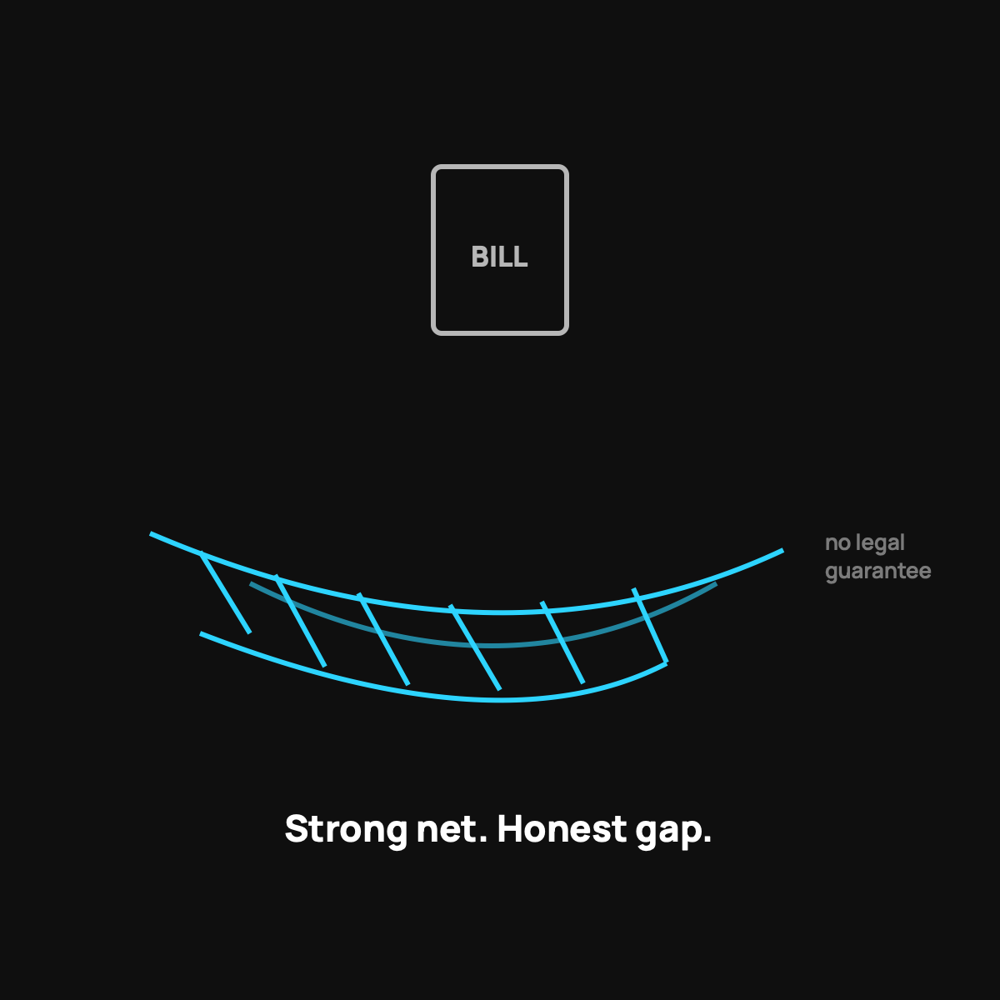

What If the Crowd Doesn't Fund Your Bill?
The worst case, stared at straight, and how to make it survivable.
Yes, the crowd can decline a bill. There's no legal guarantee, ever. But most declines happen because the bill fell outside the written guidelines: something not eligible, a pre-existing waiting period not met, or incomplete paperwork. Read the rules first, keep your $500 plus a small emergency fund, and use the appeal process. Then the worst case is a bump, not a disaster.

This is the question I respect the most, because it's the one a careful person actually loses sleep over. Everybody selling health sharing wants to talk about the wins. I'd rather talk about the worst case with you first, because if the worst case is survivable, the rest of the decision gets easy. So let's stare at it straight.
The honest truth up front
Health sharing is not insurance. There is no legal contract that guarantees your bill gets paid. That's not fine print, that's the core of the model, and anyone who tells you otherwise is not being straight with you. When you join, you're joining a community that agrees to share eligible costs, not buying a legal promise.
I say this in every post that touches the money, and I mean it every time.
So how often does the crowd actually come through?
Here's the other half, and it matters just as much. The track record is strong and public. The CrowdHealth community, the service I use, has funded more than 45,000 bills, including single bills over $600,000. Complete, eligible submissions get funded in about a week on average. So while there's no legal guarantee, there's a long, real history of the crowd showing up. I dug into that trust question.
Strong history is not the same as an ironclad promise. Both things are true, and a smart person holds both.
Why bills actually get denied
Most of the time a bill doesn't get funded, it's not a mystery or a betrayal. It's because it fell outside the guidelines everyone agreed to. The usual reasons:
- It was for something explicitly not eligible, like cosmetic work or certain pre-existing situations.
- The waiting rules for a pre-existing condition weren't met yet.
- The paperwork was incomplete, so it stalled until it got fixed.
The lesson is boring but powerful: read the guidelines before you join, and you avoid almost all of the surprises. The denials that shock people are usually things the guidelines said plainly all along.
How to make the worst case survivable
This is the part I actually do in my own life. You don't just trust and hope. You build a small backstop:
- Keep your $500 event commitment liquid, always ready.
- Keep a modest emergency fund on top of that, so a gap never wrecks you.
- Know the guidelines so you're not submitting things that were never eligible.
- Use the appeal process if something gets declined. It's not a dead end.
Do that, and even the bad scenario becomes a bump, not a catastrophe.
The takeaway
Could the crowd not fund a bill? Yes, and I won't pretend otherwise. There's no legal guarantee, ever. But the real risk is much smaller than the fear, because the track record is deep and most denials come from clear guideline rules you can read up front. Go in informed, keep a cushion, and the worst case is something you can handle. That's the honest deal, and honest is the only way I'll sell it.
Questions I get about this
How often does CrowdHealth not fund a bill?
The public track record is strong: more than 45,000 bills funded, including single bills over $600,000, with complete eligible submissions funded in about a week on average. Declines mostly come from clear guideline rules you can read up front, not from mystery.
Can I appeal if my bill is declined?
Yes. The appeal process is not a dead end. Often the fix is completing paperwork or documenting that the event was eligible. Keep every piece of paper from day one.
How do I protect myself against a declined bill?
Keep your $500 event commitment liquid, keep a modest emergency fund on top of it, know the guidelines so you never submit something that was never eligible, and appeal if needed. Do that and a gap never wrecks you. Start with the first $1,000.
Want to read the guidelines yourself before deciding? Use my code NORMAL: see CrowdHealth (opens in a new tab). New members get their first 3 months at $99 a month with code NORMAL.
My family of four uses CrowdHealth and I really believe in the model. If you join through my discount link (opens in a new tab) (code NORMAL), you get your first 3 months at $99 a month, and Normaltown USA earns a referral bonus if you stick around. It costs you nothing extra, and I only refer you to things I would tell a friend about. Health sharing is not insurance, and nothing here is medical, tax, or financial advice.

Written by David Dewese
Normal guy with a full-time job, wife, and kids. Spent twenty years pursuing music and creative ventures before starting a family. Sharing tips and tricks on how to thrive while living on an artist's income. Not a financial advisor. More about me.
New here?
Normaltown USA is plain-English money and healthcare help for normal people, written by a regular guy with a family of four. No jargon, no hype. Start here, or read the FAQ.